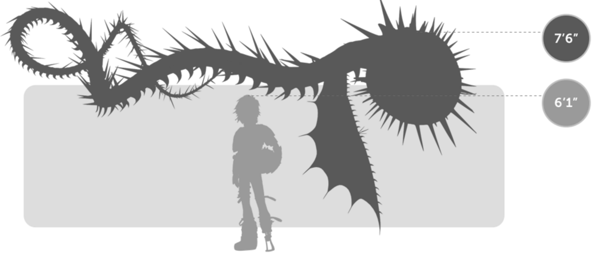
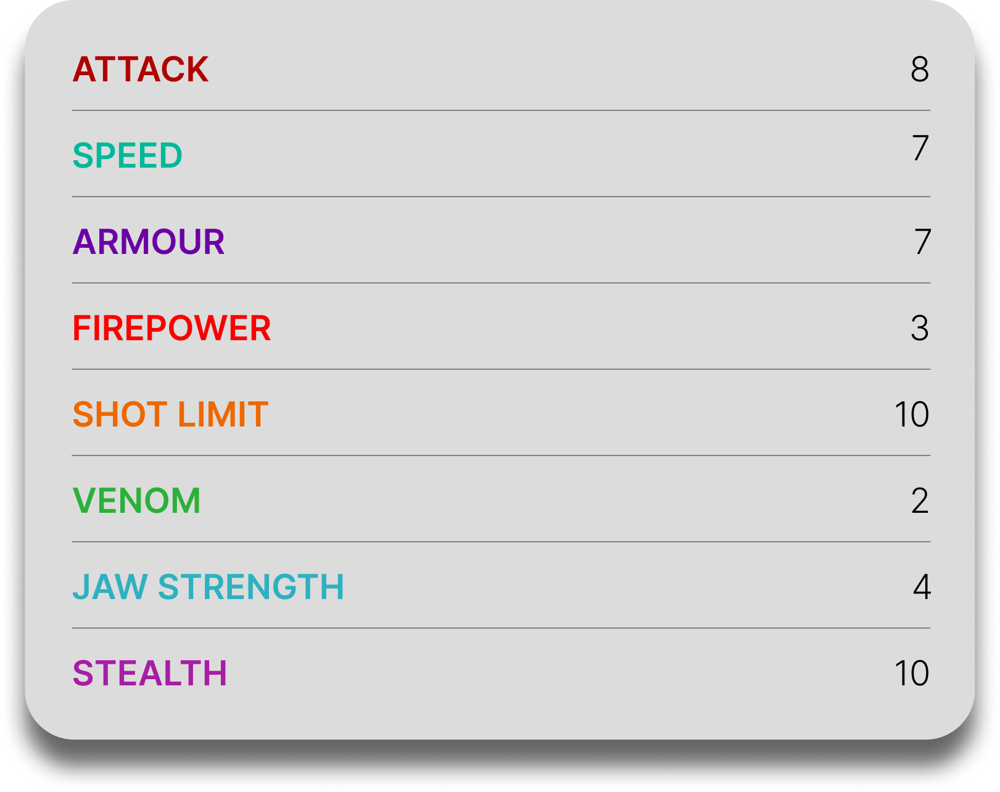

Whispering Death
General Overview
The Whispering Death is a large dragon belonging to the Boulder Class. It is one of the most feared dragons on Berk due to its destructive tunneling abilities and terrifying appearance. Named after the eerie whispering sound produced by its rotating teeth, this dragon attacks from below the ground, often striking without warning and leaving devastation in its wake.


Physical Appearance
- Body & Color: It has a long, serpentine body covered in spines and rough scales, typically in gray or earthy tones that blend with underground environments.
- Head & Face: Its head is dominated by a massive circular mouth lined with hundreds of rotating teeth and bulging eyes, giving it a disturbing appearance.
- Appendages: It has no legs, relying on its elongated body and small wings positioned near its head for movement.
- Wings & Tail: Its small wings provide limited flight, while its long tail whips behind it as it moves, aiding balance and propulsion.
Abilities and Combat
- Rotating Teeth: It possesses multiple rings of razor-sharp teeth that spin in opposite directions, creating a terrifying whispering sound and a powerful suction effect.
- Tunneling: It can burrow through solid rock at high speed using its rotating teeth, allowing it to attack from underground.
- Vacuum Effect: Its spinning teeth can pull objects and prey directly into its mouth.
- Fire Blast: It is capable of launching powerful fire attacks, often from below the surface.
- Spine Shot: It can fire sharp spines from its body as ranged weapons.
- Ambush Attacks: It relies on stealth and underground movement to surprise enemies with sudden, devastating strikes.
Behavior and Personality
- Intelligence: It is highly instinct-driven but capable of strategic ambushes and remembering threats.
- Temperament: Whispering Deaths are aggressive and territorial, attacking anything that enters their domain.
- Behavior: They spend most of their time underground, creating complex tunnel systems and emerging only to hunt or defend territory.
- Social Traits: They are generally solitary but may appear in groups when commanded or during large-scale events.
- Diet: As a Boulder Class dragon, it feeds primarily on rocks, using its powerful jaws to crush and consume them.